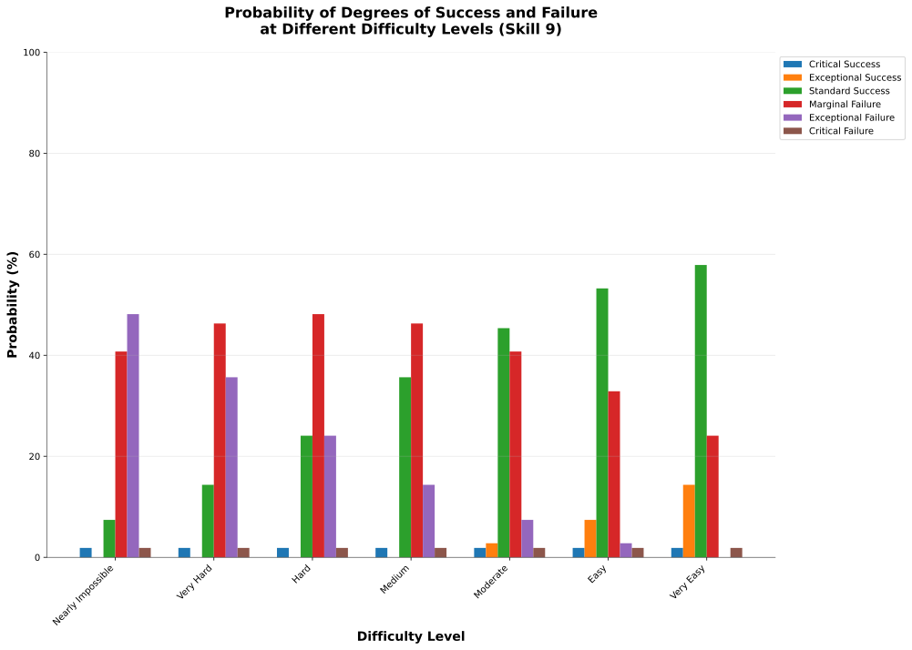

5. Logic of Action

This section describes the decision resolution mechanism for actions in OpenAxiom. When a character attempts an action with a meaningful chance of failure, the player and Game Master use the logic of action to determine the outcome. This system provides a consistent framework for resolving uncertainty while maintaining narrative flow.
The following sections detail how actions are resolved in various circumstances:
5.1. Actions
The fundamental mechanic in OpenAxiom is rolling 3d6 and comparing the result to a target number. The player rolls 3d6 and sums the results. If the total is less than or equal to the target number, the action succeeds. If the total is greater than the target number, the action fails. The target number is almost always determined by the character's relevant skill values, modified by the difficulty of the check. This is the inverse of a game system like D&D, where the target number is fixed, and then the roll is modified by your skill level.
This simple mechanic underlies all character actions in the game. The target number is determined by the character's relevant skill value, modified by applicable traits and situational factors as determined by the Game Master. Characters may also receive temporary modifiers from systems like Momentum, which can provide a +1 bonus to the character's skill value for the purpose of determining the target number for any action in the same scene.
5.1.1. Restriction on Repeating Skill Checks
Players cannot make the same skill check twice in a row without at least 3 turns between them or a change in circumstance (as determined by the Game Master). This prevents characters from simply retrying the same action indefinitely until they succeed, encouraging creative problem-solving and narrative progression.
5.1.2. Skill Selection
The Game Master provides a specific list of skills that are available in their game world. When determining which skill to use for a skill check, players must always use the most specific applicable skill from the GM's provided list. For example, if a GM's list includes both Piloting and Piloting (Starship), and a character is attempting to pilot a starship, they must use Piloting (Starship) rather than the more general Piloting skill, even if they have a higher value in the general skill.
5.1.3. Determining Target Numbers
The target number for any skill check is determined by three factors:
-
Skill value: The base value of the most specific relevant skill on the part of the player making the check. This represents the character's competency in performing the desired action, and as such is the core mechanic of the logic of action.
-
Trait modifiers: Any modifiers applied by the player's traits to the skill value. Adding these forms the effective skill value. This represents the inherent abilities or disabilities the character might have that effect their ability to carry out whatever action they're attempting. These are almost just as important as the character's skill value in the relevant action.
-
Difficulty modifiers: These represent the inherent difficulty of the task, but also situational, environmental factors, such as whether it's raining while a player is trying to run. These values typically range from -10 to +10, representing extremely easy at +10, to average difficulty at 0, to extremely difficult at -10.
Here's a table that can provide a general guideline for eyeballing the difficulty of different degrees of difficulty modifiers:
| Difficulty Modifier | Task Description | Examples |
|---|---|---|
| +10 | Trivial/Easy | Walking on a flat, stable surface; recalling common knowledge; lifting a feather |
| +5 to +9 | Very Easy | Walking carefully on a stable surface; recalling recently learned information; lifting a light object |
| +1 to +4 | Easy | Simple conversation; basic arithmetic; lifting a moderately heavy object |
| 0 | Average/Nominal | Standard conversation; routine tasks; lifting a heavy object |
| -1 to -4 | Hard | Running while injured; solving a moderately complex puzzle; lifting a very heavy object |
| -5 to -9 | Very Hard | Performing delicate surgery in poor conditions; hacking a sophisticated system; lifting an extremely heavy object |
| -10 | Extremely Hard/Nearly Impossible | Performing brain surgery in a moving vehicle; hacking a military-grade system; lifting something beyond human capability |
This table can also be used as a reference when determining the part of the difficulty modifier determined by the inherent complexity of the task at hand.
The table below provides specific examples of common situational modifiers that can be applied based on environmental conditions, physical state, equipment, social context, and task complexity, that could be added to the difficulty modifier on top of the inherent task complexity. Multiple factors can stack, but the GM should use discretion to avoid excessive modifiers that might make tasks impossible or trivial, generally capping total situational modifiers at ±5 to maintain game balance.
| Situational Factor | Modifier | Description |
|---|---|---|
| Environmental Conditions | ||
| Bright sunlight/glare | -1 | Squinting or difficulty seeing clearly |
| Dim light | -2 | Reduced visibility without night vision |
| Complete darkness | -4 | No visibility without special aids |
| Rain/sleet | -1 to -2 | Slippery conditions and reduced visibility |
| Heavy rain/storm | -3 | Severely impaired vision and movement |
| Extreme cold | -2 | Reduced dexterity and stamina |
| Extreme heat | -2 | Reduced stamina and focus |
| High winds | -1 to -2 | Difficulty with balance and precision |
| Zero gravity | -3 | Unfamiliar movement and positioning |
| Underwater | -3 to -5 | Resistance and visibility issues |
| Physical State | ||
| Fatigued/tired | -2 | Reduced stamina and focus |
| Rushing/under time pressure | -1 to -3 | Hurrying leads to mistakes |
| Careful/extra time taken | +1 to +3 | Taking time improves precision |
| Equipment/Tools | ||
| Improvised tools | -2 to -4 | Makes the task more difficult |
| No tools | -3 to -5 | Performing task without proper equipment |
| High-quality tools | +2 to +4 | Superior equipment aids performance |
| Faulty/damaged equipment | -2 to -3 | Equipment hampers performance |
| Social Context | ||
| Friendly/helpful observers | +1 | Encouragement boosts confidence |
| Hostile/hostile observers | -1 to -2 | Pressure affects performance |
| Neutral/uninterested observers | 0 | No significant effect |
| Task Complexity | ||
| Distracted/divided attention | -2 | Multitasking reduces focus |
| Focused/single task | +1 | Concentration improves performance |
| Complex multi-step task | -2 to -4 | Many parts increase chance of error |
| Familiar routine task | +2 | Experience makes it easier |
| Completely new/unfamiliar | -3 | Lack of experience hampers performance |
Not every factor above needs to be applied to every check. The Game Master should instead use these examples as a guideline for adjusting difficulty based on situational factors, focusing only on the most relevant modifiers for the specific situation.
5.1.4. Momentum
Additional modifiers may come from temporary conditions such as Momentum, which can provide a +1 bonus to the character's skill value for the purpose of determining the target number for any subsequent action in the same scene.
Momentum is a simple resource that characters either have or don't have. When a character has Momentum, they must spend it to gain the +1 bonus within the same scene.
5.1.5. Contested Actions
When two characters directly oppose each other in an action, such as in a contest of strength or a race, both characters make skill checks as the initiating character's major action for their turn. The winner is determined by comparing the degree of success each character achieves, not by comparing the numerical results of their dice rolls.
The resolution follows this cascading logic:
-
Each character independently determines their degree of success by consulting the Degrees of Success and Failure table based on their roll result and target number
-
Compare the qualitative outcomes: Critical Success > Exceptional Success > Standard Success > Marginal Failure > Exceptional Failure > Critical Failure
-
The character with the higher degree of success wins the opposed action
-
If both characters achieve the same degree of success, the character with the higher skill value wins
-
If both characters have the same skill value and achieve the same degree of success, the Game Master may call for additional rolls or determine the outcome narratively
This approach ensures that characters with higher skills have a better chance of success while still allowing for dramatic upsets when a lower-skilled character achieves a better degree of success.
5.1.6. Contested Extended Actions
A contested extended action represents ongoing struggles between two characters that require sustained effort to maintain, such as grappling, arm wrestling, or staring contests. These actions work differently from regular extended actions in that they involve direct opposition between two characters over multiple turns.
When initiating a contested extended action, the player must specify what they want to achieve with the action. This specification determines both the skill used and the effect that occurs while the action is maintained. The specific effects are determined by the Game Master based on the declared goal and the skill used.
5.1.6.1. Initiating a Contested Extended Action
-
Declaration
-
A character declares they are attempting to initiate a contested extended action against a specific opponent
-
The player specifies what they want to achieve, which determines both the skill used and the effect that occurs while the action is maintained
-
-
Initial Contest
-
The initating character makes a contested skill check against their target, as normal
-
The skill used should be appropriate to the declared goal
-
-
Resolution
-
If the initiating character succeeds against their opponent, the contested extended action is initiated and the declared effect begins
-
If the initiating character fails, the contested extended action does not begin
-
5.1.6.2. Maintaining a Contested Extended Action
Once initiated, maintaining a contested extended action requires ongoing effort:
-
On the Initiating Character's Turn:
-
The initiating character must declare they are maintaining the contested extended action
-
If the initiating character does not declare this, the contested extended action ends
-
The opponent is released on their next turn and may act normally
-
The initiating character can resume taking normal actions on their subsequent turn
-
The initiating character may not take normal actions on the same turn as they released a contested action
-
If the initiating character chooses to maintain the contested extended action, they must make another contested action against the same opponent as their major action
-
-
On the Opponent's Turn:
-
The opponent may take other actions during their turn if the type of contested action does not prevent them from doing so
-
The declared effect of the contested extended action determines what actions the opponent cannot take
-
The opponent may instead choose, as their major action for that turn, to "enter the contest"
-
The opponent makes their own contested action against the initiating character of the contested extended action
-
This contested action must use the exact same skill that the initiating character used
-
The rules for resolving this contested action are the same as for resolving an initiator's contested action
-
-
Resolving the Contested Action:
-
If the initiating character wins, they maintain control of the contested extended action and the declared effect continues
-
If the opponent wins, the contested extended action ends and the opponent gains Momentum as their upper hand
-
Only the initiating character may choose to stop maintaining the contested extended action at any time
-
The contested extended action ends immediately when the initiating character chooses to stop maintaining it
-
The declared effect of the contested extended action only applies while the action is maintained
-
This system represents the ongoing nature of physical struggles and mental contests that require continuous effort to maintain, while still allowing for clear resolution of who has the upper hand at any given moment. The non-consensual nature of the opponent's participation reflects that they are automatically considered to be resisting the initiating character's attempt to maintain control over them.
Kaelen saw his chance. The enemy soldier was reloading, exposing his flank. Rather than shoot, Kaelen lunged, initiating a grapple. He won the initial contested roll, and the fight became a close-quarters struggle. On the enemy's turn, trapped in the grapple, he used his Major Action to "enter the contest," trying to break free. He made a contested Combat (Melee) check against Kaelen and won. The GM described the sudden reversal: "The soldier twists violently in your grip, breaking your hold! He shoves you back, seizing the initiative and gaining Momentum."
The air in the spaceport cantina was thick with engine fumes and cheap synth-ale. Kaelen found himself in an arm-wrestling match with a hulking docker. Kaelen's Physical (Strength) is 12, while the docker's is a mighty 14. They both roll. Kaelen gets an 8, a Standard Success. The docker rolls a 13, also a Standard Success. The GM narrates the outcome: "You both strain, muscles bulging, but with the degrees of success tied, the docker's higher skill value of 14 gives him the edge. His raw power is just too much, and he slowly forces your hand down to the table. He wins."
5.1.7. Group Actions
When a group of characters works together on a task, the Game Master determines which character has the highest relevant skill. That character makes the primary skill check. Other characters may provide assistance, granting a +1 bonus to the primary character's roll for each assisting character, up to a maximum bonus of +3.
If two or more characters have the same value in a skill relevant to the action (even if the skills themselves are not identical), and the first attempt does not go well, the group may attempt the action again in the same turn using a different character with the same value in a skill relevant to the action as the primary actor. The same bonuses for additional helpers still apply to this second attempt. This allows for a rapid second attempt by a different character, serving as an exception to the general restriction on repeating skill checks.
Characters can also work independently on the same task. In this case, each character makes their own skill check. The Game Master determines how the individual results combine to affect the overall outcome.
For example, a heavy blast door, dented and sparking, blocked the team's escape. Dr. Aris and two security guards put their shoulders to it. The guards both have a Physical (Strength) of 11, while Aris is a meager 8. The GM explained, "The guard with the best footing will be the primary actor, rolling against his skill of 11. The other guard and Dr. Aris provide assistance, granting a +2 bonus. Your total target number to force this door is 13."
5.1.8. Extended Actions
Some tasks require sustained effort over time rather than a single roll. For these extended actions, the Game Master sets a required number of turns based on the complexity and duration of the task. Characters must make skill checks on each turn until they have successfully completed the required number of turns.
Extended actions can occur in two contexts:
-
Planned Extended Actions: Tasks that are inherently complex or time-consuming, such as crafting items, conducting research, or performing complex repairs.
-
Gritted Retries: Tasks that were previously failed with a marginal failure and are being retried with renewed determination. In this case, the action requires two turns to succeed as the character pushes themselves harder, and the player must accept a consequence (taking harm, damaging an item, or granting an enemy Momentum for their next action, of any kind) as the cost of this extra effort.
The outcome of each turn's check determines the progress:
-
Standard Success or Exceptional Success: The character completes the turn's work and counts it toward the total required turns
-
Critical Success: The character finishes the rest of the task all in that one turn, immediately completing the entire extended action
-
Marginal Failure: The character doesn't make progress on this turn but can continue the task on subsequent turns without penalty
-
Exceptional Failure or Critical Failure: The character fails catastrophically and must attempt the task all over again (if the Game Master will allow a retry)
This system allows for dramatic moments where a character can suddenly overcome a long task with a single amazing roll, while also providing meaningful consequences for poor performance that don't necessarily end the action immediately.
The time between checks and other consequences of failures are determined by the Game Master based on the narrative circumstances.
Jax's fingers flew across the holographic interface of a corporate vault's mag-lock. The GM told him this was an Extended Action requiring 3 successful turns.
Turn 1: He rolled a 7 against his skill of 11—a success. One down.
Turn 2: He hit a snag, rolling a 13—a Marginal Failure. He made no progress.
Turn 3: Undeterred, he tried a new approach and rolled a 4—a Critical Success! The GM grinned. "You're struggling, but then you spot a critical flaw in their logic. With a flurry of commands, you shatter the entire security suite in seconds. The lock clicks open. The job is done."
5.2. Consequences

The outcomes of actions in OpenAxiom are determined by the degree of success or failure. Rolling under the target number results in success, while rolling over results in failure.
5.2.1. Degrees of Success and Failure
Not all successes and failures are equal. OpenAxiom distinguishes between different degrees of success and failure based on how much the roll deviates from the target number.
| Degree of Success/Failure | Roll Result | Description | GM Guidance |
|---|---|---|---|
| Critical Success | 3 or 4 | Exceptional performance that exceeds normal capabilities. | Narrate as particularly impressive or fortunate outcomes. |
| Exceptional Success | 5 or more below target number | Above-average performance. | May provide minor additional benefits. |
| Standard Success | Equal to target or 1-4 below target | Competent performance. | Standard success with no additional benefits. |
| Marginal Failure | 1-4 above target number | Near-success. | May have some positive outcomes despite the overall failure. |
| Exceptional Failure | 5 or more above target number | Particularly poor performance. | May have additional negative consequences besides simple failure |
| Critical Failure | 17 or 18 | Catastrophic performance. | Narrate as particularly disastrous or unfortunate outcomes. |
5.2.2. Probability of Degrees of Success and Failure at Different Difficulty Levels
The 3d6 roll follows a bell curve distribution, with results near the middle (10-11) being most common and results at the extremes (3 and 18) being rare. The graph below shows the probability of achieving each degree of success or failure for a character with a skill of 9 at different difficulty levels:

This visualization shows how the probabilities shift as the difficulty of a task changes. At easier difficulties (higher target numbers), success becomes more likely, while at harder difficulties (lower target numbers), failure becomes more likely. The graph makes it clear that characters with average skills (target 9) on medium difficulty tasks will most commonly experience either a standard success or a marginal failure.
5.2.3. Critical Success
A critical success represents an exceptional performance that exceeds normal capabilities. When a character achieves a critical success, they not only accomplish their intended goal but often gain additional benefits or insights that weren't anticipated. These might include:
-
Gaining extra information beyond what was sought
-
Completing the task with time to spare
-
Creating an advantageous situation for future actions
-
Impressing observers or gaining reputation benefits
-
Avoiding potential complications or hazards
In terms of character advancement, critical successes have special significance:
-
When a critical success occurs at a pivotal story moment, it opens the possibility for the player to spend story points to gain new positive traits through the Crucible Roll process, as detailed in the Character Advancement section on Gaining Positive Traits. This represents the character having a transformative experience that could fundamentally change who they are.
-
Even if the critical success did not occur at a pivotal story moment, the player is granted one story point that they can bank for future use. This reward recognizes that exceptional performance, even in routine circumstances, demonstrates the character's growing capabilities and potential.
Critical successes should be celebrated as significant moments in a character's development, representing times when they exceed their normal limits and potentially glimpse new possibilities for growth.
5.2.4. Exceptional Success
An exceptional success indicates above-average performance that goes beyond what was expected. Characters who achieve exceptional successes:
-
Accomplish their goals with notable skill
-
May gain minor additional benefits
-
Create positive ripple effects in the narrative
-
Demonstrate expertise that might influence NPC reactions
Exceptional successes represent the character operating at peak performance and can be used by the Game Master to highlight a character's expertise or specialties.
In addition to these narrative benefits, exceptional successes grants characters Momentum, which provides a mechanical benefit for subsequent actions. The rules for how Momentum applies to future skill checks are detailed in the Momentum section under Actions. The logic for how it is gained is as follows:
-
If the player didn't already have Momentum, then they gain it.
-
If the player had Momentum for the skill check that resulted in the current exceptional success, they gain Momentum again.
-
If the player already had Momentum, and has "gained it again" even without using it (which can happen if they roll an exceptional success a second time within the same scene, before they've decided what to use their existing Momentum on), it does not stack, they just keep the existing Momentum.
This represents characters "getting into the flow" or "getting high on success," encouraging players to keep the actual momentum of play going, and giving them an interesting tatical advantage to play with, as they can act in more risky ways.
5.2.5. Standard Success
A standard success represents competent performance - the character achieves their intended goal without complications but also without additional benefits. This is the most common outcome for characters with average skills attempting moderate difficulty tasks. Standard successes:
-
Achieve the intended goal directly
-
Proceed without narrative embellishment
-
Represent reliable, everyday competence
-
Form the backbone of routine character activities
Standard successes are important because they keep the game moving forward without bogging it down in constant exceptional outcomes. They represent the baseline of competent performance that players should expect from their characters.
5.2.6. Marginal Failure
A marginal failure indicates a near-success where the character almost achieved their goal. When a character suffers a marginal failure, they have one of two choices. They can accept the failure and move on, or they can retry with grit.
Retry With Grit: The character can retry the action with renewed determination, putting more effort into the attempt. This approach turns the desired action into an Extended Action that must last two turns, but it also comes with a cost. The player rolls 1d6 on the Marginal Failure Outcomes Table to determine the specific consequence that represents the toll of this extra effort.
| Roll 1d6 | Marginal Failure Outcome |
|---|---|
| 1-2 | Take Harm: The character takes one level of harm on a relevant tracker, but it can't push the tracker past level 1. The physical or mental strain of pushing themselves takes its toll. |
| 3-4 | Item Damage: A relevant item (that is not a skill prerequisite) becomes damaged and temporarily unusable, but can be repaired. The intense effort damages their equipment or resources. |
| 5-6 | Enemy Momentum: An enemy gains Momentum for their next action, of any kind. The delay and initial shock of failing the action gives the enemy initiative. |
While the retry takes longer for the player, the increased effort of an Extended Action makes it more likely to succeed.
Kaelen was halfway up a sheer, rain-slicked cliff when his handhold gave way. He rolled an 11 against his Physical (Climbing) of 10—a Marginal Failure. He dangled precariously. "I'm not giving up," his player said. "I'll Retry With Grit." The GM nodded. "Okay, this is now a two-turn Extended Action, but there's a cost. Roll on the Marginal Failure table." The player rolled a 3: Item Damage. "As you scramble for a new hold," the GM narrated, "the strap on your gear pack snags and rips. The pack, with your spare ammo, tumbles into the chasm below. It's gone. Now, make your first roll for the climb."
5.2.7. Exceptional Failure
An exceptional failure represents particularly poor performance that goes beyond simple failure. These outcomes:
-
Create additional negative consequences beyond simple failure
-
May harm the character's position or resources
-
Can damage reputation or relationships
-
Often require additional recovery actions
Exceptional failures should have meaningful consequences that affect the narrative, but shouldn't be so punishing as to derail the game. They work best when they create interesting complications rather than simple setbacks.
When a character suffers an exceptional failure, the player rolls 1d6 on the Exceptional Failure Outcomes Table to determine the specific consequence:
| Roll 1d6 | Exceptional Failure Outcome |
|---|---|
| 1 | Take Significant Physical Harm: The character takes one level of physical harm on a relevant tracker (can push the harm tracker up to level 2) |
| 2 | Serious Item Damage: Any item (a treasured lore item, skill prerequisite or skill check in a box) becomes damaged and temporarily unusable (but can be repaired) |
| 3 | Enemy Momentum: An enemy gains Momentum for their next action, of any kind |
| 4 | Worsening Situation: The character's action not only fails but actively makes the situation worse. The Game Master describes how the failure creates additional complications or obstacles. In addition, the character takes one level of mental harm on a relevant tracker (can push the harm tracker up to level 2) |
| 5 | Resource Drain: A valuable resource is expended or lost. This could be ammunition, power cells, medical supplies, or other relevant consumables. If the character has no applicable resources, they instead suffer a level of mental harm as they realize their unpreparedness |
| 6 | Reputation Damage: The character's failure is witnessed or becomes known to others, damaging their reputation or relationships. This is particularly relevant for social interactions but can apply to any situation where others might observe the failure. The character suffers a -1 penalty to all Social skill checks for the remainder of the scene |
Dr. Aris stood before the Hyperion corporate board, his voice pleading for funding. His Social (Diplomacy) was 12, but he rolled a 17—an Exceptional Failure. "This is bad," the GM said. "Roll on the Exceptional Failure table." The result was a 6: Reputation Damage. "Your plea comes across as desperate and unhinged," the GM explained. "They not only reject your proposal, but your reputation with Hyperion Corporation drops by 1. For the rest of this meeting, they view you with disdain, giving you a -1 penalty to all Social checks."
5.2.8. Critical Failure
A critical failure indicates catastrophic performance that can have severe narrative consequences. These might include:
-
Creating dangerous situations for the character or allies
-
Attracting unwanted attention from enemies
-
Damaging equipment or resources
-
Causing significant setbacks to plans
In addition to these narrative consequences, critical failures have specific mechanical effects. When a character suffers a critical failure, they move up one level on a harm tracker related to the skill that was being used when the skill check failed, as detailed in the Character Status Effects section.
If multiple harm trackers could apply, the Game Master should choose the one with the current lowest level, following the Least Harmed Principle. This represents the character compensating for their wounds by leaning more heavily on their other capabilities.
A critical failure can only push any harm tracker up to level 2 (Impaired). Beyond that point, there may be narrative consequences to a critical failure, but no additional mechanical effects. This limitation prevents critical failures from being overly punitive while still providing meaningful consequences for catastrophic performance. Information about Harm Tracker Levels and Penalties can be found in the Character Mechanics section.
Critical failures are dramatic moments that can shift the direction of a scene or even an entire campaign. They should be used sparingly and with consideration for their impact on the overall narrative.